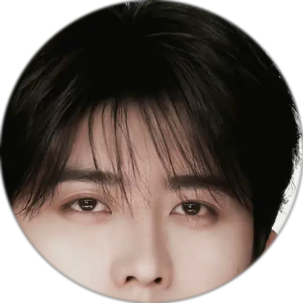

直接用你指定的那张照片做的圆形头像——不存在像不像的问题， 它本人就在那儿。动画走克制路线：轻微呼吸与极淡光晕，不做夸张动作，耐看。

待机：整体极缓慢地呼吸（5.6 秒一轮，位移只有 1.6%，几乎察觉不到但画面是活的）， 外加一圈很淡的光晕同步起伏。说话：节奏加快到 2.6 秒、光晕稍强—— 照片无法改表情，所以用节奏而不是五官来区分状态。
圆形遮罩用 4 倍超采样生成，边缘平滑无锯齿；圆外已处理为真透明， 可直接叠在任何底色上。
<!-- 静态用法：本身就是圆形透明图，不用再写 border-radius -->
<img src="avatar-photo-128.png" style="width:64px;height:64px">
<!-- 注：本页在 photo/ 子目录，故实际引用写作 ../avatar-photo-128.png -->
/* 动态：套一个 .av 容器即可 */
.av img { animation: breathe 5.6s ease-in-out infinite; }
.av.speaking img { animation-duration: 2.6s; } /* 说话时加快 */
/* 切状态：只换 class */
document.querySelector('.av').className = speaking ? 'av speaking' : 'av';